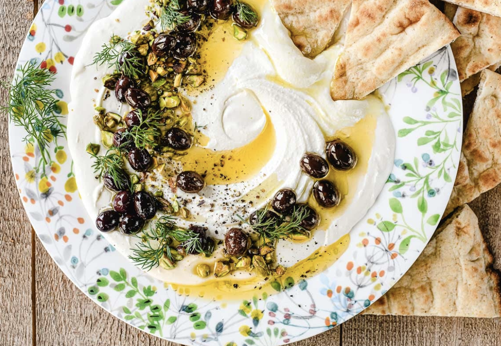

Wipped Feta Recipe
Creamy, salty feta is whizzed in a food processor with greek yogurt to make the ultimate dip. Once you’ve made this and seen how easy it is, we reckon you’ll find it hard to stop. You can use it as the base of a salad, serve it with crudités and flat bread
Ingredients
- 200g feta
- 150g greek yogurt
- 2 tablespoons extra-virign olive oil
- Freshly ground black pepper
Instructions
- Put the feta and yogurt into a food processor and whizz until smooth
- Contiune processing while drizzle in the olive oil
- Season and serve, drizzle with more extra oil and sprinkle with plenty of freshly ground black pepper